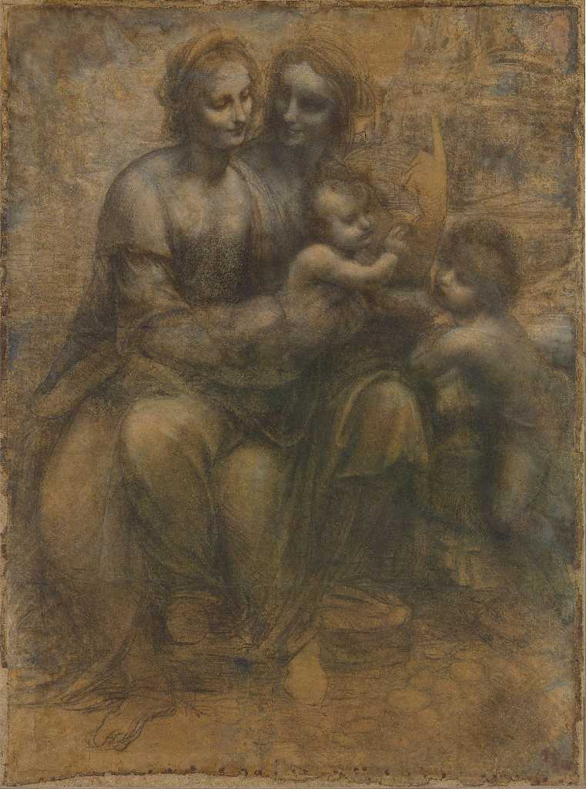
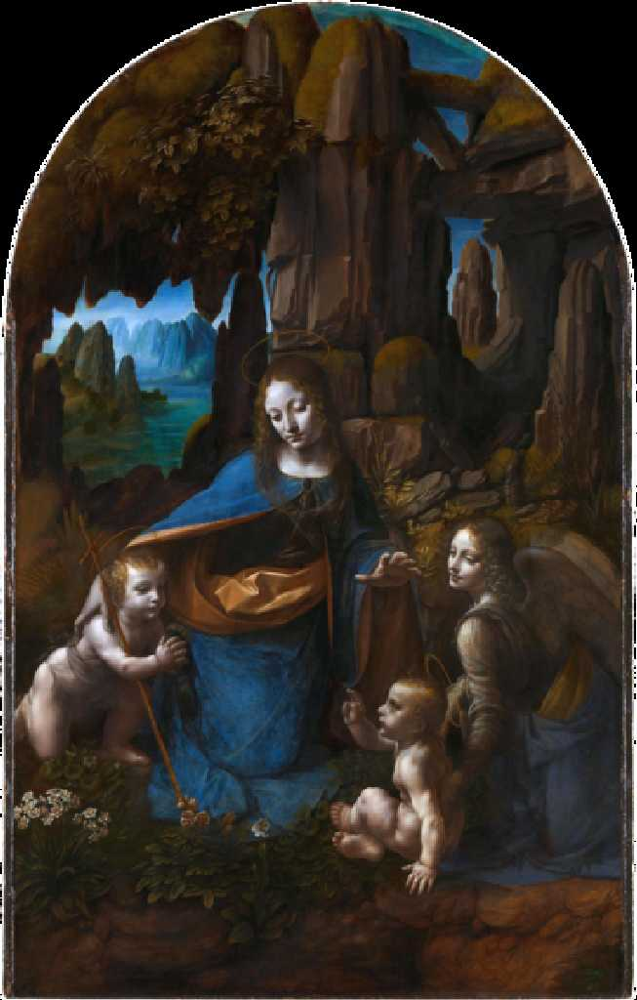

Gogh Sunflowers National Gallery London
ゴーギャンが来る前の希望に満ちたアルルで１８８８年に描かれた「ひまわり」 の中の傑作でその迫力に感動した



Virgin and Child with Ss Anne and John the Baptist Leonardo da Vinchi
８０日間世界一周鉄道の旅で５３日目 学生時代以来約４０年ぶりのナショナルギャラリーでレオナルドダヴィンチのドローイング画聖アンナと聖母子と幼児聖ヨハネを鑑賞した

Virgin of the Rocks Leonardo da Vinchi
更に名画岩窟の聖母も見逃せない